Building Blocks¶
PRISM was created to conduct "full-up" analyses of propulsion systems, however, by its nature it also contains the building blocks to conduct smaller, more focused tasks such as those described below.
Look up Fluid Properties¶
The following script.
#from prism.props.refprop7.n_dll_fluid import n_fluid
from engcoolprop.ec_fluid import EC_Fluid
h = EC_Fluid("N2")
h.setPD( P=50.0, D=0.1)
h.printTPD()
h.setTP(T=400.0, P=500.0)
h.printTPD()
h.constS_newP(P=1000.0)
h.printTPD()
Gives Output:
N2 T=1303.3 P= 50.0 D=0.1000 E=235.32 H=327.91 S=1.771 Q=4.74
N2 T= 400.0 P= 500.0 D=3.4128 E= 66.10 H= 93.23 S=1.299 Q=999.00
N2 T= 491.3 P=1000.0 D=5.4081 E= 80.12 H=114.36 S=1.299 Q=999.00
Look up CEA Isp¶
Bipropellant¶
The following script.
from prism.isp.cea.CEA_Isp import CEA_Isp
Pc=200.0
MR=1.0
eps=10.0
print 'at Pc=%g psia, MR=%g, Area Ratio=%g'%(Pc,MR,eps)
ispObj = CEA_Isp(propName='', oxName='LOX', fuelName="CH4")
IspODE, Cstar, Tcomb = ispObj.get_IvacCstrTc(Pc=Pc, MR=MR, eps=eps )
print 'for propellant =',ispObj.desc
print 'IspODE=%g sec, Cstar=%g ft/sec, Tcomb=%g degR'%(IspODE, Cstar, Tcomb)
Gives Output:
at Pc=200 psia, MR=1, Area Ratio=10
reading cea isp data files for LOX / CH4
for propellant = LOX / CH4
IspODE=246.205 sec, Cstar=4427.22 ft/sec, Tcomb=2076.43 degR
Monopropellant¶
The following script.
from prism.isp.cea.CEA_Isp import CEA_Isp
Pc=200.0
eps=10.0
print 'at Pc=%g psia, Area Ratio=%g'%(Pc,eps)
ispObj = CEA_Isp(propName="HAN315")
IspODE, Cstar, Tcomb = ispObj.get_IvacCstrTc(Pc=Pc, eps=eps )
print 'for propellant =',ispObj.desc
print 'IspODE=%g sec, Cstar=%g ft/sec, Tcomb=%g degR'%(IspODE, Cstar, Tcomb)
Gives Output:
Config File: C:\Users\Charlie\PRISM.cfg
Refprop dll_path = C:/RefProp8/
at Pc=200 psia, Area Ratio=10
reading cea isp data files for HAN315
for propellant = HAN315
IspODE=241.309 sec, Cstar=4499.55 ft/sec, Tcomb=3731.46 degR
Solid Propellant¶
The following script.
from prism.isp.cea.CEA_Isp import CEA_Isp
Pc=200.0
eps=10.0
print 'at Pc=%g psia, Area Ratio=%g'%(Pc,eps)
ispObj = CEA_Isp(propName="ARC448")
IspODE, Cstar, Tcomb = ispObj.get_IvacCstrTc(Pc=Pc, eps=eps )
print 'for propellant =',ispObj.desc
print 'IspODE=%g sec, Cstar=%g ft/sec, Tcomb=%g degR'%(IspODE, Cstar, Tcomb)
Gives Output:
Config File: C:\Users\Charlie\PRISM.cfg
Refprop dll_path = C:/RefProp8/
at Pc=200 psia, Area Ratio=10
reading cea isp data files for ARC448
for propellant = ARC448
IspODE=228.243 sec, Cstar=4290.93 ft/sec, Tcomb=3455.97 degR
Calculate TDK Isp¶
The following script.
from prism.isp.tdk import TDKwrap
tdk = TDKwrap.TDK( oxName='O2', fuelName='CH4',raoNozzle=0, varGammaRao=0,
fracFuelL=None, fracOxL=None,
MR=3.0, eps=150.0, Rthrt=1.0,
Pc=250.0, THETAB=25.0,
RWTU = 1.0, RWTD = 1.0, calcBL=1, IWALL=4, THETAI=30.0, ScarfAng=0.0,
SkewParabTheta=None, SkewParabExitAng=None,
pcentBell=74.0, Pamb=0.0, findOptParab=0, saveFile='ame_nom', useDBruns=1,
inpNozContour=None)
print 'tdk.Isp ', tdk.Isp
print 'tdk.Cstar',tdk.Cstar
print 'tdk.etaKin1D',tdk.etaKin1D
print 'tdk.etaKin2D',tdk.etaKin2D
print 'Pexit=',tdk.Pexit
print
print 'IspTDK_wBL=',tdk.IspTDK_wBL
print 'IspODE=',tdk.IspODE
Gives Output:
tdk.Isp 369.1169
tdk.Cstar 6127.79
tdk.etaKin1D 0.973964333441
tdk.etaKin2D 0.966432474834
Pexit= 0.1008
IspTDK_wBL= 364.932178
IspODE= 381.9376
Matplotlib Graph of CEA Output¶
A matplotlib chart of LOX/LH2 CEA data can be created as shown below.
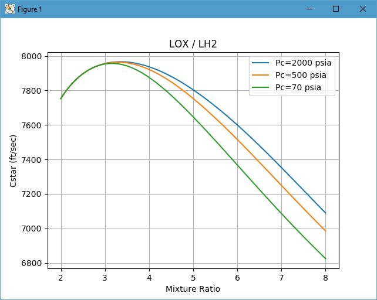{kind=link}
The above chart was created by the following script.
from prism.isp.cea.CEA_Isp import CEA_Isp
from pylab import *
Pc = 500.0
pcL = [ 2000., 500., 70.]
ispObj = CEA_Isp(propName='', oxName='LOX', fuelName="LH2")
for Pc in pcL:
cstarArr = []
MR = 2.0
mrArr = []
while MR < 8.0:
cstarArr.append( ispObj.get_Cstar( Pc=Pc, MR=MR) )
mrArr.append(MR)
MR += 0.05
plot(mrArr, cstarArr, label='Pc=%g psia'%Pc)
legend(loc='best')
grid(True)
title( ispObj.desc )
xlabel( 'Mixture Ratio' )
ylabel( 'Cstar (ft/sec)' )
savefig('cea_cstar_plot.png', dpi=120)
show()
Excel Graph of CEA Output¶
An Excel chart of LOX/LH2 CEA data can be created as shown below.
Cstar¶
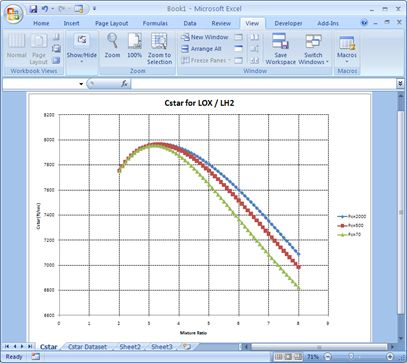{kind=link}
The above chart was created by the following script.
from prism.utils import xlChart
from numpy import arange
from prism.isp.cea.CEA_Isp import CEA_Isp
pcL = [ 2000., 500., 70.]
topRow = ['MR']
for Pc in pcL:
topRow.append( 'Pc=%g'%Pc )
rs = [topRow]
ispObj = CEA_Isp(propName='',
oxName='LOX', fuelName="LH2")
mrL = arange(2.0,8.1,0.1)
for MR in mrL:
row = [MR]
for Pc in pcL:
row.append( ispObj.get_Cstar( Pc=Pc, MR=MR) )
rs.append(row)
xl = xlChart.xlChart()
xl.makeChart(rs, title="Cstar for "+ispObj.desc, nCurves = len(pcL),
chartName="Cstar",
sheetName="Cstar Dataset",
yLabel="Cstar (ft/sec)", xLabel="Mixture Ratio")
Isp¶
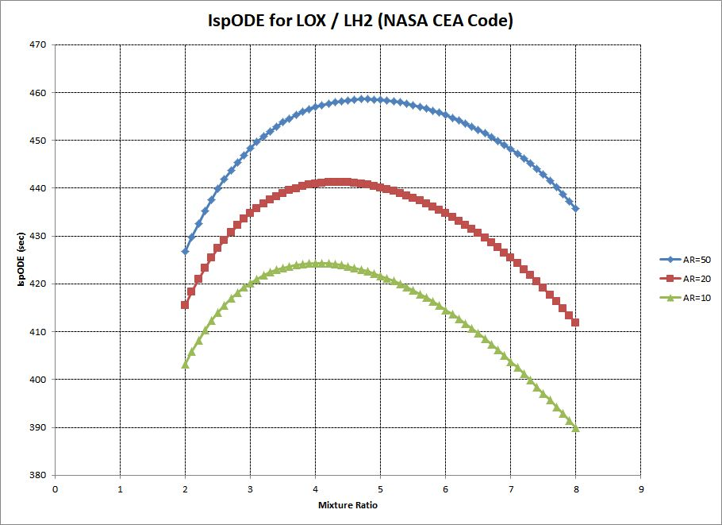{kind=link}
The above chart was created by the following script.
from prism.utils import xlChart
from numpy import arange
from prism.isp.cea.CEA_Isp import CEA_Isp
Pc = 500.0
epsL = [ 50., 20., 10.]
topRow = ['MR']
for eps in epsL:
topRow.append( 'AR=%g'%eps )
rs = [topRow]
ispObj = CEA_Isp(propName='', oxName='LOX', fuelName="LH2")
mrL = arange(2.0,8.1,0.1)
for MR in mrL:
row = [MR]
for eps in epsL:
IspODE, Cstar, Tcomb = ispObj.get_IvacCstrTc(Pc=Pc, MR=MR, eps=eps )
row.append( IspODE )
rs.append(row)
xl = xlChart.xlChart()
xl.makeChart(rs, title="IspODE for "+ispObj.desc+" (NASA CEA Code)", nCurves=len(epsL),
chartName="IspODE",
sheetName="IspODE Dataset",
yLabel="IspODE (sec)", xLabel="Mixture Ratio")
TDK Delivered Isp¶
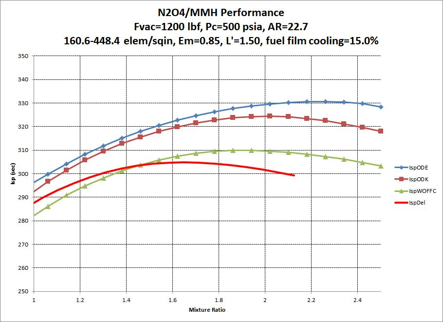{kind=link}
The above chart was created by the following script.
from prism import *
from prism.utils import xlChart
pcentFFC=15.0
etaPulse=1.0
mrBarrier=0.15
FvacGoal = 1200.0
elemDens=None # if None use d/v
Em=0.85
pc=500.0
eps=22.7
oxName= 'N2O4'
fuelName='MMH'
Tox=500.0 # Tox=None if using reference point
Tfuel=500.0 # Tfuel=None if using reference point
props = oxName + '/' + fuelName
mrLow=0.5
mrHigh=2.5
Nsteps = 25
LoverDt=0.1
LchamMin=1.5
rs = [ ['MRcore','IspODE','IspODK','IspWOFFC','IspDel','MRengine','Tcomb','CstarWOFFC','AreaRatio','Pc',
'etaKin', 'etaDiv', 'etaBL', 'etaVap', 'etaMix', 'etaEm', 'etaFFC', 'etaPulse'] ]
delMR = (mrHigh-mrLow)/Nsteps
LprimeMin = 99999.0
LprimeMax = 0.0
elemDensMin = 99999.0
elemDensMax = 0.0
for i in range(Nsteps+1):
mr = mrLow + i * delMR
Engine = Engine_FFC(name="Est Engine",
oxName=oxName, fuelName=fuelName, etaERE=0.98,
Pc=pc, Fvac=FvacGoal, eps=eps, mr=mr, CR=2.5, LoverDt=LoverDt, LchamMin=LchamMin,
pcentBell=80.0)
if Engine.Lcham > LprimeMax: LprimeMax = Engine.Lcham
if Engine.Lcham < LprimeMin: LprimeMin = Engine.Lcham
LP = Lperf( engine = Engine ,Tox=Tox, Tfuel=Tfuel, elemDens=elemDens,
pcentFFC=pcentFFC, mrBarrier=mrBarrier, etaPulse=etaPulse, Em=Em)
if LP.elemDensCalc > elemDensMax: elemDensMax = LP.elemDensCalc
if LP.elemDensCalc < elemDensMin: elemDensMin = LP.elemDensCalc
IspWOFFC = LP.IspDel / LP.etaFFC
rs.append( [mr, LP.IspODE, LP.IspODK, IspWOFFC, LP.IspDel,LP.mrEngine,
LP.TcombODE, LP.CstarDel, eps, pc,
LP.etaKin, LP.etaDiv, LP.etaBL, LP.etaVap, LP.etaMix, LP.etaEm, LP.etaFFC, LP.etaPulse] )
print Engine.getSummary()
print LP.getSummary()
xl = xlChart.xlChart()
xl.xlApp.DisplayAlerts = 0 # Allow Quick Close without Save Message
#xl.makeDataSheet( _resultsRS, sheetName="Tank Fill")
if '%.2f'%LprimeMin=='%.2f'%LprimeMax:
LprimeStr = "%.2f"%LprimeMin
else:
LprimeStr = "%.2f-%.2f"%(LprimeMin,LprimeMax)
if '%.1f'%elemDensMin=='%.1f'%elemDensMax:
elemDensStr = '%.1f'%elemDensMin
else:
elemDensStr = '%.1f-%.1f'%(elemDensMin,elemDensMax)
if elemDens:
myTitle = "%s Performance\nFvac=%.0f lbf, Pc=%.0f psia, AR=%.1f\n%.2f elem/sqin, Em=%.2f, L'=%s, fuel film cooling=%.1f%%"%\
(props, FvacGoal, pc, eps, elemDens, Em, LprimeStr, pcentFFC)
else:
myTitle = "%s Performance\nFvac=%.0f lbf, Pc=%.0f psia, AR=%.1f\n%s elem/sqin, Em=%.2f, L'=%s, fuel film cooling=%.1f%%"%\
(props, FvacGoal, pc, eps, elemDensStr, Em, LprimeStr, pcentFFC)
xl.makeChart(rs,
title=myTitle,nCurves = 4,
chartName="Performance",
sheetName="FillData",yLabel="Isp (sec)", xLabel="Mixture Ratio")
xl.changeSeriesXValuesColumn( NColumn=6, NSeries=4)
#xl.putSeriesOnSecondary(2, y2Label="Temperature (degR)")
#xl.makeNewChartOfPlottedColumns(cols=(7,), ZeroBased=0, chartName='Quality')
#xl.changePlotTitle( 'Quality of %s'%tf.gasData.name )
#xl.labelPrimaryYAxis( 'Quality of %s (fraction gas)'%tf.gasData.name )
xl.labelXAxis( 'Mixture Ratio' )
xl.setXrange( 1.0, 2.5)
xl.setYrange( 250.0, 350.0)
xl.setLineThickness( NSeries=4, thickness=5)
xl.setSeriesColor( NSeries=4, red=255, green=0, blue=0)
xl.turnMarkerOnOff( NSeries=4, showPoints=0)
Calculate Friction Factor¶
The Colebrook equation is the most standard approach to calculating friction factor.
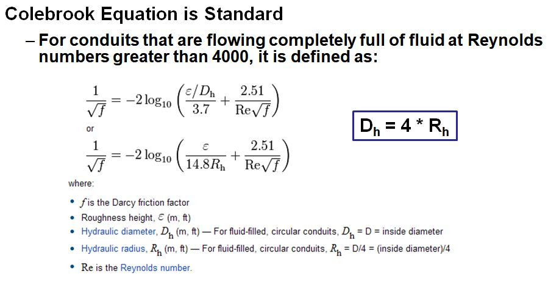Because of Colebrook's iterative nature, however, other non-iterative equations are sometimes used:
Haaland Equation is Non-iterative
ffHaaland = (1.0/ (-1.8*log10((eod/3.7)**1.11 + 6.9/ReNum)) )**2
Buzzelli Equation is Non-iterative
From the "Fluid Power" article for single pass evaluation of colebrook
by Dennis Buzzelli June 19, 2008
Transition from Laminar to Turbulent is at Reynolds Numbers from about 2300 to 4000
The following script calculates all three of these approaches.
from prism.utils.colebrook import colebrook_ffact, buzzelli_ffact
from math import log10
ReNum = 2.0E5
diam = 0.2
rough = 0.0001 # in
eod = rough / diam
ffColebrook = colebrook_ffact(rough,diam,ReNum)
ffBuzzelli = buzzelli_ffact(eod, ReNum)
ffHaaland = (1.0/ (-1.8*log10((eod/3.7)**1.11 + 6.9/ReNum)) )**2
print 'Colebrook:','%g'%ffColebrook
print 'Buzzelli :','%g'%ffBuzzelli, \
'(%+.2f'%((ffBuzzelli-ffColebrook)*100.0/ffColebrook),'% Error)'
print 'Haaland :','%g'%ffHaaland, \
'(%+.2f'%((ffHaaland-ffColebrook)*100.0/ffColebrook),'% Error)'
Gives Output:
Colebrook: 0.0188198
Buzzelli : 0.0188215 (+0.01 % Error)
Haaland : 0.0186371 (-0.97 % Error)
A graph of the Colebrook equation is created by the following script
from pylab import *
from prism.utils.colebrook import colebrook_ffact, buzzelli_ffact
e = 5.0e-6
diam = 1.0
eList = [.03, .01, .003, .001, .0003, .0001, .00001, .000001]
cycle = [1.0]
while cycle[-1]<10.0:
cycle.append( cycle[-1] * 1.1 )
cycle = cycle[:-1]
ReList = [1.E3, 1.E4, 1.E5, 1.E6, 1.E7]
for e in eList:
xRe = []
yFF = []
for ReBase in ReList:
for cyVal in cycle:
ReNum = ReBase * cyVal
ff = colebrook_ffact(e,diam,ReNum)
#print ReNum, ff
xRe.append( ReNum )
yFF.append( ff )
#p.add( biggles.Curve(xRe, yFF, color="red") )
semilogx(xRe,yFF,linewidth=3, label='Ce/D=%G'%e )
legend(loc='best')
grid(True)
title( "Colebrook Friction Factor" )
xlabel( "Reynolds Number" )
ylabel( "Friction Factor" )
ax = axes()
ax.set_xlim( (1.0E3, 1.0E8) )
show()
And gives the output:
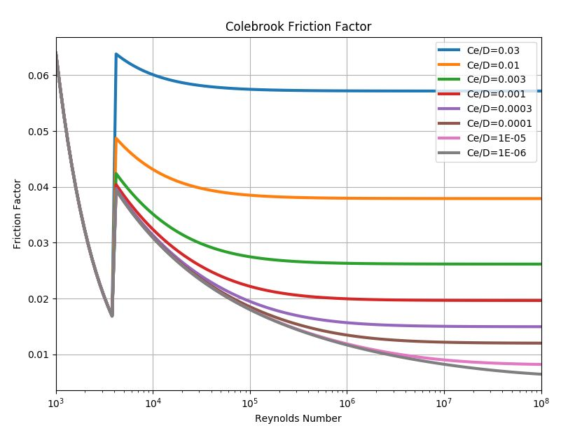{kind=link}
Create a Nozzle Profile¶
Nozzle contours are generally created as parabolic or Rao. Parabolic contours can be just as high performing as Rao, and may have better mechanical properties. (i.e. the entrance angle to the nozzle tends to be slightly smaller in parabolic than in Rao)
PRISM contains routines to create a parabolic contour and the TDK program has an option to create a Rao nozzle contour.
Parabolic¶
A parabolic contour is defined as shown below. There are general guidelines for choosing the entrance and exit angles of the nozzle as shown in the diagram.
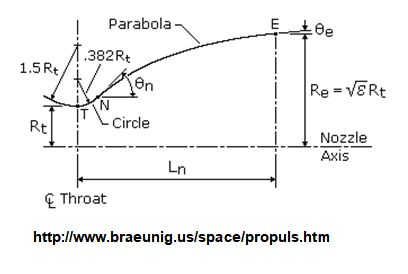 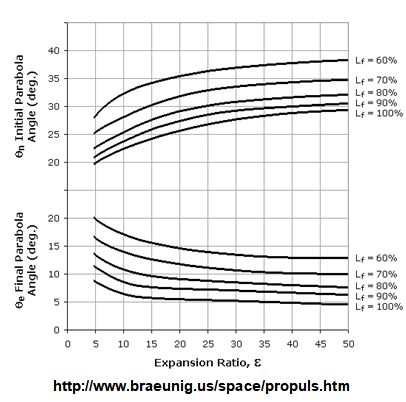{kind=link}
{kind=link}
The following script.
from prism.isp.tdk import raoContour, parabolic
from math import *
from prism.isp.cea.CEA_Isp import CEA_Isp
pc=400.0
pcentBell=70.0
eps=7.0
oxName= 'N2O4'
fuelName='M20'
mr = 1.0
Dthrt = 0.65
Rthrt = Dthrt/2.
ispObj = CEA_Isp(oxName=oxName, fuelName=fuelName)
IspODE, Cstar, Tcomb, mw, gam = ispObj.get_IvacCstrTc_ChmMwGam( Pc=pc, MR=mr, eps=eps)
print 'Using gamma =',gam
p = parabolic.Parabola(Rt=Rthrt, eps=eps, pcentBell=pcentBell, gam=gam, Rd=0.5, showPlot=0)
myTitle = "Example Nozzle Contour, %s/%s, Area Ratio=%g, %%Bell=%g\nThroat Diam = %g, Entrance Ang=%g deg, Exit Ang=%g deg in"%\
(oxName, fuelName, eps, pcentBell, Dthrt, p.theta, p.exitAng)
p.makeExcelPlots( title=myTitle, absUnits=1)
Creates an Excel spreadsheet with the following output:
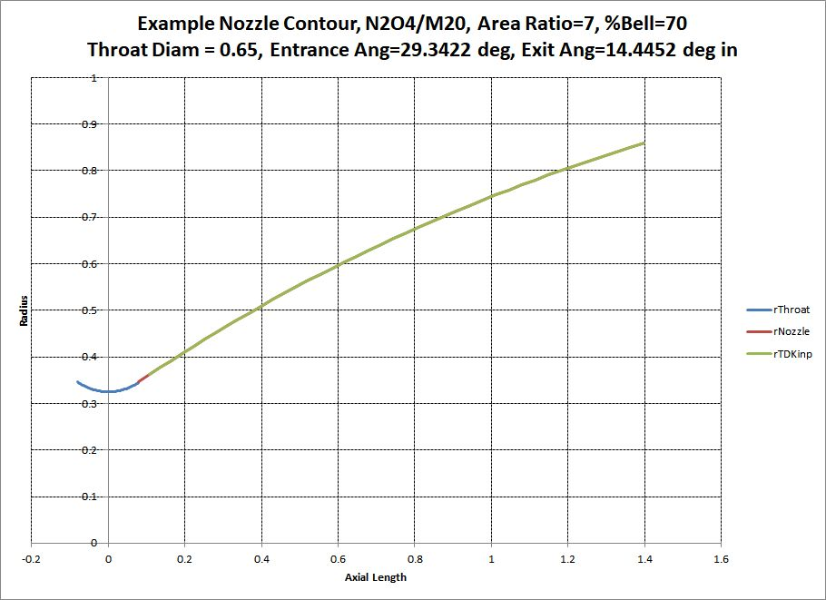{kind=link}
Rao¶
A Rao nozzle is designed by an optimized Method of Characteristics inside the TDK code.
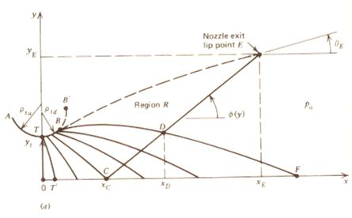The following script.
from prism.isp.tdk import raoContour, parabolic
from math import *
from prism.isp.cea.CEA_Isp import CEA_Isp
from prism.utils import xlChart
def sinDeg( ang ):
return sin( ang*pi/180.0 )
def cosDeg( ang ):
return cos( ang*pi/180.0 )
def isFloat(s):
'''is the given string a float'''
try: float(s)
except ValueError: return 0
else: return 1
pc=400.0
pcentBell=80.0
eps=40.0
oxName= 'N2O4'
fuelName='M20'
mr = 1.0
Dthrt = 0.65
Rthrt = Dthrt/2.
ispObj = CEA_Isp(oxName=oxName, fuelName=fuelName)
IspODE, Cstar, Tcomb, mw, gam = ispObj.get_IvacCstrTc_ChmMwGam( Pc=pc, MR=mr, eps=eps)
print 'Using gamma =',gam
rao = raoContour.RaoContour2( eps=eps, gam=gam, molWt=mw,
Pc=pc, Tc=Tcomb, THETAB=25.0,
RWTU = 2.0, RWTD = 0.5, RSTAR = 1.0,
pcentBell=pcentBell, Lnoz=0.0, saveFile="testRao",
useRao95=0, odeObj=None, useDBruns=0)
myTitle = "Example Rao Nozzle Contour, %s/%s, Area Ratio=%g, %%Bell=%g\nThroat Diam = %g, Entrance Ang=%g deg, Exit Ang=%g deg in"%\
(oxName, fuelName, eps, pcentBell, Dthrt, rao.entranceAngle, rao.exitAngle )
rs = [ ['x','Rnozzle'] ]
# make the circular arc at the throat
ang = -rao.entranceAngle
while ang<=rao.entranceAngle:
rs.append( [rao.RWTD*sinDeg(ang)*Rthrt, (1.0 + rao.RWTD*(1.-cosDeg(ang)))*Rthrt] )
ang += 1.
rs.append( ['',''] ) # separate circular throat from detailed contour
# add the nozzle
for ZStar,RStar,MachNumber,Theta in rao.contourStar[3:]:
if isFloat(RStar) and isFloat(ZStar):
rs.append( [float(ZStar)*Rthrt, float(RStar)*Rthrt] )
xl = xlChart.xlChart()
xl.xlApp.DisplayAlerts = 0 # Allow Quick Close without Save Message
xl.makeChart(rs, title=myTitle ,nCurves = 1,
chartName="Rao",sheetName="raoData",
yLabel="Radial Position", xLabel="Axial Position")
Creates an Excel spreadsheet with the following output:
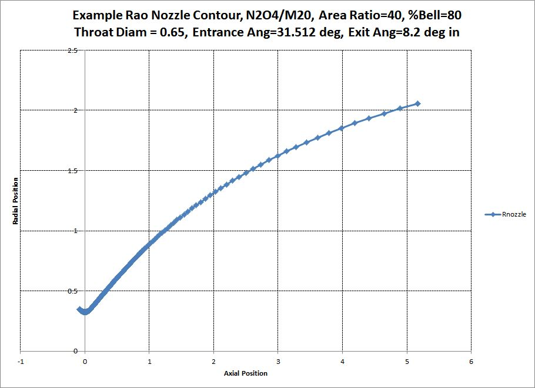{kind=link}
Compare Parabola Rao¶
To compare the two nozzle contours, run the following script.
from prism.isp.tdk import raoContour, parabolic
from math import *
from prism.isp.cea.CEA_Isp import CEA_Isp
from prism.utils import xlChart
def sinDeg( ang ):
return sin( ang*pi/180.0 )
def cosDeg( ang ):
return cos( ang*pi/180.0 )
def isFloat(s):
'''is the given string a float'''
try: float(s)
except ValueError: return 0
else: return 1
pc=400.0
pcentBell=80.0
eps=25.0
oxName= 'N2O4'
fuelName='M20'
mr = 1.0
Dthrt = 0.65
Rthrt = Dthrt/2.
ispObj = CEA_Isp(oxName=oxName, fuelName=fuelName)
IspODE, Cstar, Tcomb, mw, gam = ispObj.get_IvacCstrTc_ChmMwGam( Pc=pc, MR=mr, eps=eps)
print 'Using gamma =',gam
p = parabolic.Parabola(Rt=Rthrt, eps=eps, pcentBell=pcentBell, gam=gam, Rd=0.5, showPlot=0)
rao = raoContour.RaoContour2( eps=eps, gam=gam, molWt=mw,
Pc=pc, Tc=Tcomb, THETAB=25.0,
RWTU = 2.0, RWTD = 0.5, RSTAR = 1.0,
pcentBell=pcentBell, Lnoz=0.0, saveFile="",
useRao95=0, odeObj=None, useDBruns=0)
myTitle = "Example Rao/Parabola Comparison, %s/%s\nArea Ratio=%g, %%Bell=%g Throat Diam = %g"%\
(oxName, fuelName, eps, pcentBell, Dthrt)
rsP = [ ['x','RnozParab'] ]
# make the circular arc at the throat
ang = -p.theta
while ang<=p.theta:
rsP.append( [p.Rd*sinDeg(ang)*Rthrt, (1.0 + p.Rd*(1.-cosDeg(ang)))*Rthrt] )
ang += 1.
rsP.append( ['',''] ) # separate circular throat from parabola
# add the parabola
for i, xval in enumerate( p.zContour ):
row = [xval * Rthrt, p.rContour[i] * Rthrt]
rsP.append(row)
rsR = [ ['x','RnozRao'] ]
# make the circular arc at the throat
ang = -rao.entranceAngle
while ang<=rao.entranceAngle:
rsR.append( [rao.RWTD*sinDeg(ang)*Rthrt, (1.0 + rao.RWTD*(1.-cosDeg(ang)))*Rthrt] )
ang += 1.
rsR.append( ['',''] ) # separate circular throat from detailed contour
# add the nozzle
for ZStar,RStar,MachNumber,Theta in rao.contourStar[3:]:
if isFloat(RStar) and isFloat(ZStar):
rsR.append( [float(ZStar)*Rthrt, float(RStar)*Rthrt] )
rs = xlChart.combineRS( rsP, rsR )
xl = xlChart.xlChart()
xl.xlApp.DisplayAlerts = 0 # Allow Quick Close without Save Message
xl.makeChart(rs, myTitle ,nCurves = 1,
chartName="RaoParab",sheetName="raoParabData",
yLabel="Radial Position", xLabel="Axial Position")
xl.addNewSeriesToCurrentSheetChart( xColumn=3, yColumn=4)
xl.turnMarkersOnOff( showPoints=0)
Creates an Excel spreadsheet that compares the two contours:
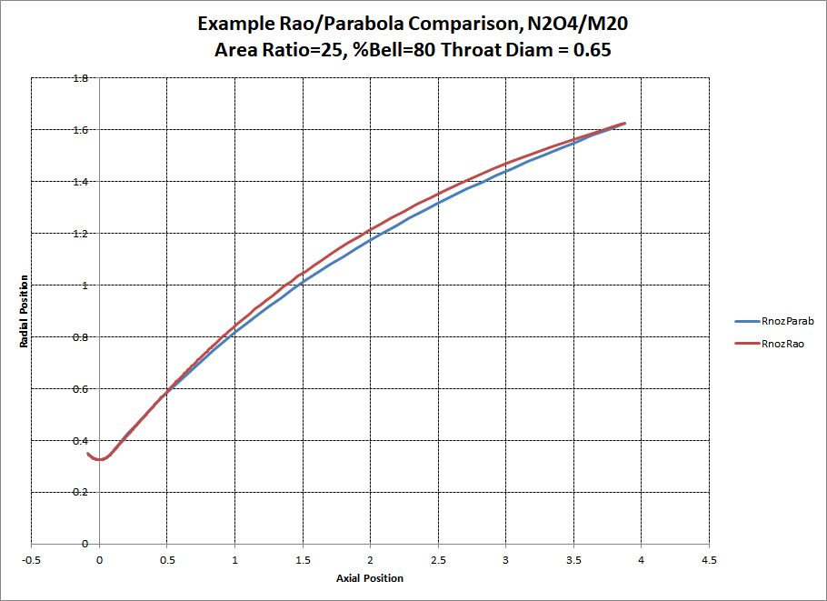{kind=link}
Nozzle Flow Separation¶
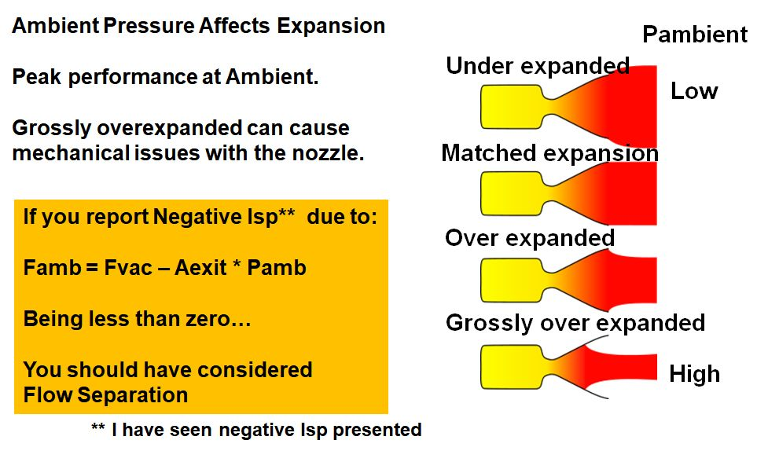{kind=link}
The following script runs nozzle separation calculations.
from prism.isp import separated_Cf
from prism.utils import xlChart
from prism.isp.cea.CEA_Isp import CEA_Isp
Fvac = 110.0
pc=108.0
eps=5.0
oxName= 'N2O4'
fuelName='MMH'
mr = 1.65
Nsteps = 20
ispObj = CEA_Isp(oxName=oxName, fuelName=fuelName)
IspODE, Cstar, Tcomb, mw, gam = ispObj.get_IvacCstrTc_ChmMwGam( Pc=pc, MR=mr, eps=eps)
print 'Using gamma =',gam
pcArr = [100.0, 150.0, 200.0]
rs = [ [ 'Pamb','Cf/Cfvac', 'Pc','mode'] ]
for pc in pcArr:
for i in range( Nsteps+1):
Pamb = 14.7 * i / Nsteps
Cf, CfOverCfvac, mode = separated_Cf.ambientCf(gam=gam, epsTot=eps, Pc=pc, Pamb=Pamb)
rs.append( [ Pamb, CfOverCfvac, pc, mode] )
rs.append(['','','',''])
xl = xlChart.xlChart()
xl.xlApp.DisplayAlerts = 0 # Allow Quick Close without Save Message
myTitle = "%s/%s Ambient Performance at Area Ratio=%.1f\n"%(oxName, fuelName, eps) +\
"Pc Range = %g - %g psia"%(min(pcArr), max(pcArr))
xl.makeChart(rs,
title=myTitle,nCurves = 1,
chartName="Performance",
sheetName="FillData",yLabel="Cfamb/Cfvac", xLabel="Ambient Pressure (psia)")
xl.setYrange( 0.6, 1.0)
The script creates an Excel spreadsheet of nozzle separation calculations. A table of nozzle conditions is shown in the upper left corner of the image below. A graph of ambient pressure vs nozzle Cf ambient divided by Cf vacuum is shown in the bottom right corner of the image below:
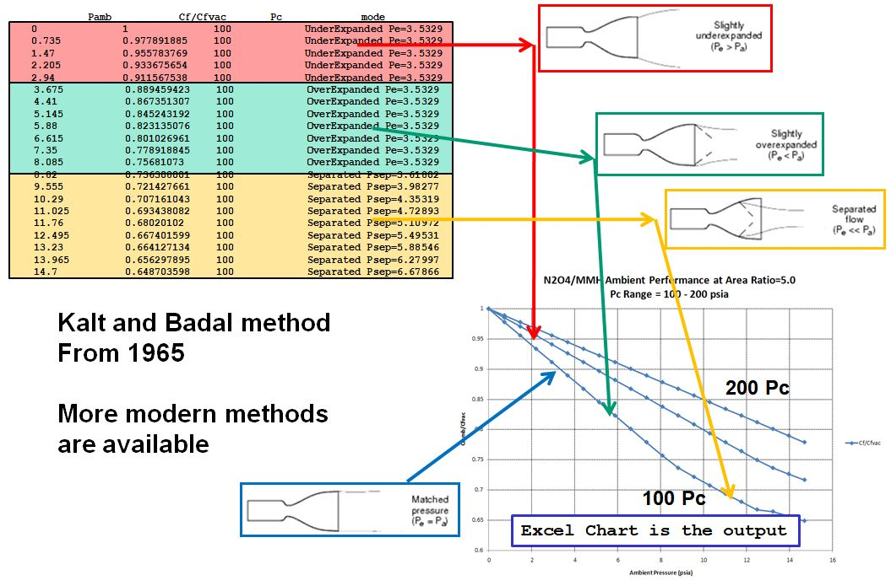Solve Nozzle Exit Diameter¶
The following script.
from prism import Goal
from prism import Engine_FFC
EngineDivert = Engine_FFC(name="Divert Engine",
oxName='N2O4', fuelName='MMH', Number=4,
cxw=1.0, Pc=200.0, Fvac=1000.0, eps=10.0, mr=1.65,
CR=2.5, LoverDt=2.0, LchamMin=1.5, cxwValves=1.0,
etaERE=0.97, calcEtaNoz=1, useFastCEALookup=1,isBell=1, pcentBell=80.,
halfAngDeg=15.0, xlnOverLcham=0.9)
print 'Find Area Ratio that has Exit Diameter = 5.0 inches'
print
print 'Initial AR =',EngineDivert.eps,' Dexit =',EngineDivert.Dexit
def newDexit( e ):
EngineDivert.eps = e
EngineDivert.reCalc()
return EngineDivert.Dexit
G = Goal(goalVal=5.0, minX=2.0, maxX=80.0,
funcOfX=newDexit, tolerance=1.0E-5, maxLoops=40, failValue=80.0)
eps, ierror = G()
print
print 'Area Ratio =',eps,'for Dexit =',EngineDivert.Dexit
print EngineDivert.getSummary()
Gives Output:
Find Area Ratio that has Exit Diameter = 5.0 inches
Initial AR = 10.0 Dexit = 6.1915743957
Area Ratio = 6.30835836802 for Dexit = 5.00000001086
Bipropellant Engine: Divert Engine
mass = 49.792 lbm
type = inert
Propellants : N2O4 / MMH
NASA CEA Code for ODE performance
Physical Weight Model
Injector Material is SS
Nozzle Material is Cb103
Bell Nozzle with Percent Bell = 80
Mass is for 4 engines total
==== INPUT ====
Fvac = 1000 lbf
Pc = 200.0 psia
eps = 6.30836
%Bell = 80.00 %
mr = 1.65
CR = 2.5
xlnOverLcham = 0.9
LoverDt = 2
LchamMin = 1.500 in
cxwInj = 1
cxwValves = 1
cxw = 1
etaERE = 0.97
==== OUTPUT ====
Isp = 276.997 sec
Cstar = 5547.8 ft/sec
etaBL = 0.991001
etaDiv = 0.983664
etaKin = 0.984052
etaNoz = 0.959266
effIsp = 0.930488
IspODE = 297.69 sec
CstarODE = 5719.4 ft/sec
Tc = 5544.0 degR
PcFace = 209.609 psia
Pexit = 4.44532 psia
wdotTot = 3.61015 lbm/sec
wdotOx = 2.24783 lbm/sec
wdotFl = 1.36232 lbm/sec
rhoFl = 0.0316 lbm/cuin
rhoOx = 0.0521 lbm/cuin
volDotOx = 43.1645 cuin/sec
volDotFl = 43.1597 cuin/sec
DFlow = 1.353 in
At = 3.11253 sqin
Dt = 1.991 in
Dcham = 3.148 in
Dexit = 5.000 in
Lcham = 3.981 in
xlc = 0.398 in
xln = 3.583 in
Lnoz = 4.492 in
Lengine = 11.621 in
rhoInj = 0.280 lbm/cuin
rhoNoz = 0.310 lbm/cuin
thkCham = 0.026 in
thkNoz = 0.021 in
WtNoz = 0.778 lbm
WtChamber = 0.262 lbm
WtInj = 3.954 lbm
WtAcoustic = 2.804 lbm
WtValves(2) = 4.292 lbm
WtMisc = 0.357 lbm
wt/Engine = 12.448 lbm
F/W = 80.334 lbf/lbm
Solenoid Valve: biprop valves
mass = 4.292 lbm
type = inert
Based on Solenoid Valve Experience
Mass is for 2 valves total
==== INPUT ====
cuInchPerSec = 43.1645 cuin/sec
cxw = 1.000
==== OUTPUT ====
basemass = 2.146 lbm
Size a Liquid Engine¶
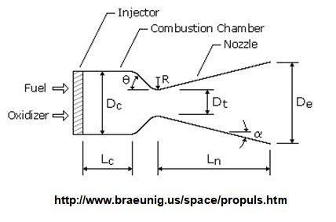{kind=link}
The following script.
from prism import Engine_FFC
EngineDivert = Engine_FFC(name="Divert Engine",
oxName='N2O4', fuelName='MMH', Number=4,
cxw=1.0, Pc=200.0, Fvac=1000.0, eps=10.0, mr=1.65,
CR=2.5, LoverDt=2.0, LchamMin=1.5, cxwValves=1.0,
etaERE=0.97, calcEtaNoz=1, useFastCEALookup=1,isBell=1, pcentBell=80.,
halfAngDeg=15.0, xlnOverLcham=0.9)
print EngineDivert.getSummary()
Gives Output:
Bipropellant Engine: Divert Engine
mass = 49.186 lbm
type = inert
Propellants : N2O4 / MMH
NASA CEA Code for ODE performance
Physical Weight Model
Injector Material is SS
Nozzle Material is Cb103
Bell Nozzle with Percent Bell = 80
Mass is for 4 engines total
==== INPUT ====
Fvac = 1000 lbf
Pc = 200.0 psia
eps = 10
%Bell = 80.00 %
mr = 1.65
CR = 2.5
xlnOverLcham = 0.9
LoverDt = 2
LchamMin = 1.500 in
cxwInj = 1
cxwValves = 1
cxw = 1
etaERE = 0.97
==== OUTPUT ====
Isp = 286.35 sec
Cstar = 5547.8 ft/sec
etaBL = 0.988751
etaDiv = 0.987664
etaKin = 0.980909
etaNoz = 0.95791
effIsp = 0.929173
IspODE = 308.177 sec
CstarODE = 5719.4 ft/sec
Tc = 5544.0 degR
PcFace = 209.609 psia
Pexit = 2.34259 psia
wdotTot = 3.49224 lbm/sec
wdotOx = 2.17441 lbm/sec
wdotFl = 1.31782 lbm/sec
rhoFl = 0.0316 lbm/cuin
rhoOx = 0.0521 lbm/cuin
volDotOx = 41.7547 cuin/sec
volDotFl = 41.75 cuin/sec
DFlow = 1.331 in
At = 3.01087 sqin
Dt = 1.958 in
Dcham = 3.096 in
Dexit = 6.192 in
Lcham = 3.916 in
xlc = 0.392 in
xln = 3.524 in
Lnoz = 6.320 in
Lengine = 13.332 in
rhoInj = 0.280 lbm/cuin
rhoNoz = 0.310 lbm/cuin
thkCham = 0.025 in
thkNoz = 0.021 in
WtNoz = 0.958 lbm
WtChamber = 0.249 lbm
WtInj = 3.825 lbm
WtAcoustic = 2.699 lbm
WtValves(2) = 4.220 lbm
WtMisc = 0.346 lbm
wt/Engine = 12.296 lbm
F/W = 81.325 lbf/lbm
Solenoid Valve: biprop valves
mass = 4.220 lbm
type = inert
Based on Solenoid Valve Experience
Mass is for 2 valves total
==== INPUT ====
cuInchPerSec = 41.7547 cuin/sec
cxw = 1.000
==== OUTPUT ====
basemass = 2.110 lbm
To create an image of an engine like below.
{kind=link}
use the following script.
from prism.engines.Engine_FFC import Engine_FFC
from prism.pov.POV_Scene import POV_Scene
EngineDivert = Engine_FFC(name="Divert Engine",
oxName='N2O4', fuelName='MMH', Number=4,
cxw=1.0, Pc=200.0, Fvac=1000.0, eps=10.0, mr=1.65,
CR=2.5, LoverDt=2.0, LchamMin=1.5, cxwValves=1.0,
etaERE=0.97, calcEtaNoz=1, useFastCEALookup=1,isBell=1, pcentBell=80.,
halfAngDeg=15.0, xlnOverLcham=0.9)
scene = POV_Scene(ambient=0.3)
scene.addItem( EngineDivert.getPOV_Item() )
scene.write(view="", ortho=1, clockX=-15., clockY=-15.)
scene.render()
Size a Tank¶
The following script.
from prism.tanks.Tank import Tank
oxekv = Tank(name="Divert Vehicle Propellant Tank",
makeCompositeTank=1, kalmod=0,
matlName="grEpox", vfree=486.0,ell=1.767,rcyltd=1.445,
ptank=1400.0,sf=1.5,cxw=1.5,
ithcyl=1,kacqui=1,inpex=1,expefi=0.98,
tblad=0.030,tbond=0.030,ttrspc=0.010,
rhobnd=0.04,rhoacq=0.098,tliner=0.03,rholiner=0.098)
print oxekv.getSummary()
Gives Output:
Cylindrical/Spherical/Elliptical Tank: Divert Vehicle Propellant Tank
mass = 3.763 lbm
type = inert
Composite Tank Algorithm
Bladder Thickness is input at 0.030 in
kalmod = 0
==== INPUT ====
vfree = 486 cuin
vfreeTotal = 486 cuin
ell = 1.767
rcyltd = 1.445
ptank = 1400 psia
sf = 1.5
cxw = 1.5
ithcyl = 1
kacqui = 1 transverse collapsing Alum. bladder
inpex = 1
expefi = 0.98
tblad = 0.030 in
tbond = 0.030 in
ttrspc = 0.010 in
rhobnd = 0.04 lbm/cuin
rhoacq = 0.098 lbm/cuin
tliner = 0.030 in
rholiner = 0.098 lbm/cuin
==== OUTPUT ====
rinsid = 3.535 in
dinsid = 7.069 in
OR = 3.618 in
OD = 7.237 in
OH = 14.385 in
hinsid = 14.215 in
SAinsid = 341.045 sqin
cyl = 10.215 in
wacqui = 0.987 lbm
vacqui = 9.87014 cuin
dpacq = 65.9344 psig
pullag = 1465.93 psia
vresid = 9.72 cuin
vtank = 505.59 cuin
tming = 0.008 in
thkcyl = 0.024 in
thkend = 0.025 in
thkBladOut = 0.030 in
wliner = 1.053 lbm
wtank(+liner) = 1.522 lbm
rho = 0.0637 lbm/cuin
PmeopVoverW = 188096 lbf-in/lbm
Pburst(est.) = 2100.0 psia
PburstVoverW = 282143 lbf-in/lbm
Size a Liquid Line¶
Input Diameter¶
The following script.
from prism import Line_Liq_inpD, Inc_liquid
Fl = Inc_liquid( symbol="N2H4",T=530.0,P=240.0, mass_lbm=10.0)
h = Line_Liq_inpD(name="Fuel Line",wdot=2.0, matlName="Ti", OD=0.5,
liqObj=Fl, Number=10, Kfactors=5.0, pLine=400.0, thkWall=0.045)
print h.getSummary()
Gives Output:
Liquid Line: Fuel Line
mass = 6.432 lbm
type = inert
fluid : N2H4
Structural Material : Ti
Mass is for 10 lines total
==== INPUT ====
wdot = 2 lbm/sec
OD = 0.500 in
thkWall = 0.045 in
len_inches = 50 in
Kfactors = 5 vel heads
roughness = 5e-06 in
pLine = 400 psia
cxw = 1.25
# Lines = 10
==== OUTPUT ====
dpLine = 58.05 psid
dPperVelHead = 8.15 psid
velFPS = 34.6998 ft/sec
ReNum = 1.214732E+05
rinsid = 0.205 in
dinsid = 0.410 in
volLine = 6.60127 cuin
rho = 0.16 lbm/cuin
sy = 119000 psi
sf = 65.3049
tming = 0.030 in
fluid rho = 0.0363801 lbm/cuin
fluid visc = 61.356 1.0E5 * lb/ft-sec
wt/Line = 0.643 lbm
Input Velocity¶
The following script.
from prism import Line_Liq, Inc_liquid
Fl = Inc_liquid( symbol="N2H4",T=530.0,P=240.0, mass_lbm=10.0)
h = Line_Liq(name="Fuel Line",wdot=2.0, matlName="Ti", velFPS=40.0,
liqObj=Fl, Number=10, Kfactors=5.0, pLine=400.0)
print h.getSummary()
Gives Output:
Liquid Line: Fuel Line
mass = 3.882 lbm
type = inert
fluid : N2H4
Structural Material : Ti
Allow Non-Standard wall thickness
Mass is for 10 lines total
==== INPUT ====
wdot = 2 lbm/sec
velFPS = 40 ft/sec
len_inches = 50 in
Kfactors = 5 vel heads
roughness = 5e-06 in
thkInp = 0 in
pLine = 400 psia
sf = 4
cxw = 1.25
# Lines = 10
==== OUTPUT ====
dpLine = 78.53 psig
ReNum = 1.304208E+05
thkLine = 0.030 in
rinsid = 0.191 in
dinsid = 0.382 in
doutside = 0.442 in
volLine = 5.72658 cuin
rho = 0.16 lbm/cuin
sy = 119000 psi
tming = 0.030 in
fluid rho = 0.0363801 lbm/cuin
fluid visc = 61.356 1.0E5 * lb/ft-sec
wt/Line = 0.388 lbm
Size a Gas Line¶
Input Diameter¶
The following script.
from prism import Line_Gas
h = Line_Gas(name="Ox Line",wdot=1.0, matlName="Ti", thkWallInp=0.083,
calcVelFromDiamInp=1, DiamInp=1.0,
usePinlet=1, velFPS=20.0, PgasInlet=1000.0, TgasDegR=530.0,
gasSymbol='O2', Number=10, Kfactors=2.0)
print h.getSummary()
Gives Output:
Gas Line: Ox Line
mass = 23.911 lbm
type = inert
In: O2 T= 530.0 P=1000.0 D=5.8605 E= 76.25 H=107.85 S=1.255 Supercrit
Out:O2 T= 529.9 P= 996.6 D=5.8410 E= 76.25 H=107.85 S=1.256 Supercrit
fluid : O2
Structural Material : Ti
Allow Non-Standard wall thickness
Using Pinlet to design line
Line Diameter is an Input (vel is output)
Mass is for 10 lines total
==== INPUT ====
wdot = 1 lbm/sec
DiamInp = 1.000 in
thkWallInp = 0.083 in
len_inches = 50 in
Kfactors = 2 vel heads
roughness = 5e-06 in
PgasInlet = 1000.0 psia
sf = 4
cxw = 1.25
# Lines = 10
==== OUTPUT ====
PgasOutlet = 996.6 psia
velFPS = 45.139 ft/sec
velHead = 1.289 psi
dpLine = 3.45 psig
dp due to Line = 0.89 psig
dp due to Ks = 2.56 psig
dp/Pinlet = 0.00344998
ReNum = 1.243308E+06
fricfact = 0.0116279
thkLine = 0.083 in
rinsid = 0.417 in
dinsid = 0.834 in
volLine = 27.3144 cuin
rho = 0.16 lbm/cuin
sy = 119000 psi
tming = 0.035 in
fluid dens = 5.86053 lbm/cuft
fluid visc = 1.47634e-05 lb/ft-sec
fluid sonicV = 1085.38 ft/sec
fluid Mach = 0.0415883
wt/Line = 2.391 lbm
Input Velocity¶
The following script.
from prism import Line_Gas
h = Line_Gas(name="Ox Line",wdot=1.0, matlName="Ti", thkWallInp=0.083,
calcVelFromDiamInp=0, DiamInp=1.0,
usePinlet=1, velFPS=100.0, PgasInlet=1000.0, TgasDegR=530.0,
gasSymbol='O2', Number=10, Kfactors=2.0)
print h.getSummary()
Gives Output:
Gas Line: Ox Line
mass = 16.892 lbm
type = inert
In: O2 T= 530.0 P=1000.0 D=5.8605 E= 76.25 H=107.85 S=1.255 Supercrit
Out:O2 T= 529.5 P= 981.9 D=5.7577 E= 76.27 H=107.85 S=1.257 Supercrit
fluid : O2
Structural Material : Ti
Allow Non-Standard wall thickness
Using Pinlet to design line
Line Velocity is an Input (diam is output)
Mass is for 10 lines total
==== INPUT ====
wdot = 1 lbm/sec
velFPS = 100 ft/sec
thkWallInp = 0.083 in
len_inches = 50 in
Kfactors = 2 vel heads
roughness = 5e-06 in
PgasInlet = 1000.0 psia
sf = 4
cxw = 1.25
# Lines = 10
==== OUTPUT ====
PgasOutlet = 981.9 psia
velHead = 6.325 psi
dpLine = 18.15 psig
dp due to Line = 5.89 psig
dp due to Ks = 12.26 psig
dp/Pinlet = 0.0181458
ReNum = 1.851863E+06
fricfact = 0.0108525
thkLine = 0.083 in
rinsid = 0.282 in
dinsid = 0.565 in
volLine = 12.5281 cuin
rho = 0.16 lbm/cuin
sy = 119000 psi
tming = 0.035 in
fluid dens = 5.86053 lbm/cuft
fluid visc = 1.47634e-05 lb/ft-sec
fluid sonicV = 1085.38 ft/sec
fluid Mach = 0.0921338
wt/Line = 1.689 lbm
Size a Gas Orifice¶
Gas orifices are sized using the equations below.
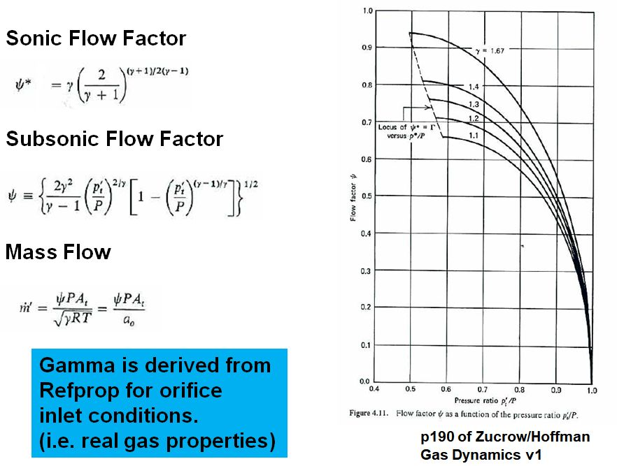{kind=link}
An example script to calculate a gas orifice size is:
from prism import Gas_Orifice
orf = Gas_Orifice(name="gas orifice", gasSymbol='O2', matlName="Ti",
CdAInp=0.1, wdot=1.1, TgasDegR=530.0,
usePinlet=0, PgasOutlet=400.0, PgasInlet=400.0,
Number=1, sf=4.0, cxw=1.25)
print orf.getSummary()
and give the following output:
Gives Output:
Gas Orifice: gas orifice
mass = 0.003 lbm
type = inert
In: O2 T= 530.0 P= 521.3 D=3.0013 E= 79.18 H=111.34 S=1.301 Supercrit
Out:O2 T= 526.1 P= 400.0 D=2.3098 E= 79.28 H=111.34 S=1.317 Supercrit
fluid : O2
Structural Material : Ti
Allow Non-Standard wall thickness
Using Poutlet to design Orifice
Orifice CdA is an Input
Orifice is SUB-SONIC
==== INPUT ====
wdot = 1.1 lbm/sec
SCFM = 797.491 SCFM
CdAInp = 0.1 in
PgasOutlet = 400.0 psia
sf = 4
cxw = 1.25
# Orifices = 1
==== OUTPUT ====
PgasInlet = 521.3 psia
velFPS = 527.77 ft/sec
dpOrifice = 121.32 psid
dp/Pinlet = 0.232717
thkWall = 0.030 in
rinsid = 0.178 in
dinsid = 0.357 in
rho = 0.16 lbm/cuin
sy = 119000 psi
tming = 0.030 in
fluid dens = 3.00131 lbm/cuft
fluid visc = 1.41988e-05 lb/ft-sec
fluid sonicV = 1075.42 ft/sec
fluid Mach = 0.490757
Size a Gas Regulator¶
Similar methods as above are used to size a gas regulator:
from prism import Gas_Regulator
reg = Gas_Regulator(name="gas regulator", gasSymbol='O2', matlName="Ti",
wdot=1.0, TgasInit=530.0, TgasFinal=400.0,
PgasOutlet=400.0, PgasInit=4000.0, PgasFinal=800.0,
Number=1, CdASF=1.5, sf=4.0, cxw=1.25)
print reg.getSummary()
Gives Output:
Gas Regulator: gas regulator
mass = 0.244 lbm
type = inert
Initial:
In: O2 T= 530.0 P=4000.0 D=23.2378 E= 59.45 H= 91.32 S=1.143 Supercrit
Out:O2 T= 440.1 P= 400.0 D=2.8238 E= 65.09 H= 91.32 S=1.276 Supercrit
Final:
In: O2 T= 400.0 P= 800.0 D=6.7375 E= 54.27 H= 76.26 S=1.200 Supercrit
Out:O2 T= 377.7 P= 400.0 D=3.4004 E= 54.48 H= 76.26 S=1.239 Supercrit
fluid : O2
Structural Material : Ti
Allow Non-Standard wall thickness
Final condition is SUB-SONIC
==== INPUT ====
wdot = 1 lbm/sec
SCFM = 724.992 SCFM
TgasInit = 530.0 degR
PgasInit = 4000.0 psia
TgasFinal = 400.0 degR
PgasFinal = 800.0 psia
PgasOutlet = 400.0 psia
CdASF = 1.5
sf = 4
cxw = 1.25
# Regs = 1
==== OUTPUT ====
CdAInit = 0.0094 sqin
CdAFinal = 0.0421 sqin
CdA = 0.0631 sqin
dpRegulator = 400.00 psig
dp/Pinlet = 0.5
rinsid = 0.142 in
dinsid = 0.284 in
rho = 0.16 lbm/cuin
sy = 119000 psi
tming = 0.030 in
fluid dens = 23.2378 lbm/cuft
fluid visc = 2.08782e-05 lb/ft-sec
fluid sonicV = 1317.98 ft/sec
Helium Pressurization¶
The sizing of a Helium pressurization system depends on:
- Helium MEOP
- Propellant Tank Pressure
- Propellant Tank Volume
- Helium ACS Requirements
- Operating Temperature Range
- Mission Time
- Regulator Delta P Requirements
- Average Acceleration
- Tankage Mass, Surface Area, Material
- External Heat Loads
Create Summary¶
The following script takes these into consideration.
from prism import PressurantInteg
h = PressurantInteg(name="General Test", gas='HE',
VpropTnk=300000.0,PGasTnkMEOP=4455.0,PpropNom=180.0,
Nbottle=4,
PfinGasOvPnom=0.9, heatExchangerTout=None,
tAction=400.0,TminR=510.0,TmaxR=550.0, useDBruns=0, TbottleMatlConst=None)
print h.getSummary()
Gives Output:
Helium Pressurant: General Test
mass = 24.742 lbm
type = pressurant
Integrated Heat Transfer
==== INPUT ====
VpropTnk = 300000 cuin
PGasTnkMEOP = 4455 psia
PpropNom = 180 psia
PfinGasOvPnom = 0.9
tAction = 400 sec
TminR = 510.0 degR
TmaxR = 550.0 degR
==== OUTPUT ====
WGasTotal = 24.742 lbm
WtGasResid = 1.667 lbm
WGasNon-Resid = 23.075 lbm
Vbottle = 16117 cuin
wdotGas = 0.0576869 lbm/sec
compressInit = 1.1403
PbottleCold = 4135.27 psia
densInitBot = 2.65275 lbm/cuft
densFinalBot = 0.178768 lbm/cuft
densFinalProp = 0.138971 lbm/cuft
gammaIsen = 1.63927
gamPolyBottle = 1.14896
gamPolyTank = 1.01908
fracIsenBottle = 0.233009
fracIsenTank = 0.0298427
TfinalPropGas = 480.0 degR
TfinalGasBot = 335.1 degR
PfinalGasBot = 162.0 psia
Show Calculation Details¶
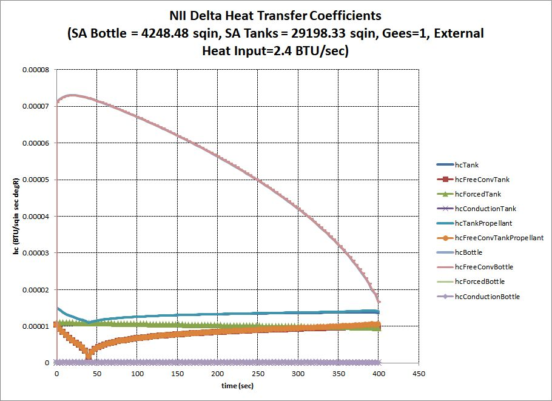 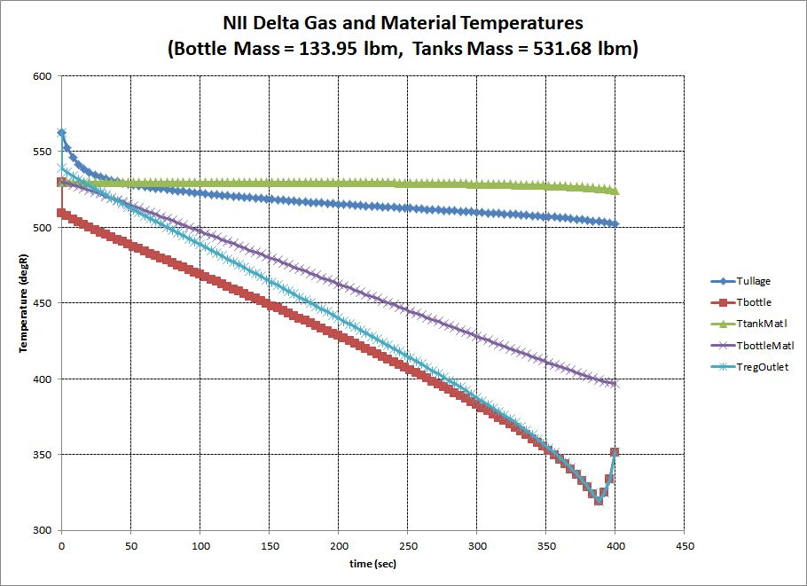{kind=link}
{kind=link}
from prism import TankPress
# simulation of NII Delta He pressurization
Vfull = 5.69 * 1728.0
Voull = 5.0 * 1728.0
Vftank = 78.66 * 1728.0
Votank = 95.11 * 1728.0
Vtanks = Vftank + Votank
Vullage = Vfull + Voull
Vliq = Vtanks - Vullage
tburn = 400.0
Vbottle = 8.7 * 1728.0
Pbottle=4455.0
Peff = (Vftank*184.4 + Votank*171.0)/Vtanks
tf = TankPress(gas="HE", Vbottle=Vbottle, Vullage=Vullage, Vliq=Vliq, vdotLiq=Vliq/tburn,
Pbottle=Pbottle, Ptank=Peff,
Tbottle=530.0, Tullage=530.0, initTullage=1, AccGees=1.0,
PVoW_Bottle=500000., PVoW_Tank=100000.,
Nbottle=3, ellBottle=1.0, LcylOvDBottle=0.0, Cp_effBottle=0.125, # Cp Ti=.125, Al=.2, Monel=.1
Ntank=2, ellTank=1.414, LcylOvDTank=1.0, Cp_effTank=0.15,
CdARegMax=None, NtimeSteps=100,
QexternalIntoBottle=2.4, dPregulator=2.0 )
tf.makeExcelPlots( title='NII Delta' )
End Burning Solid Grain¶
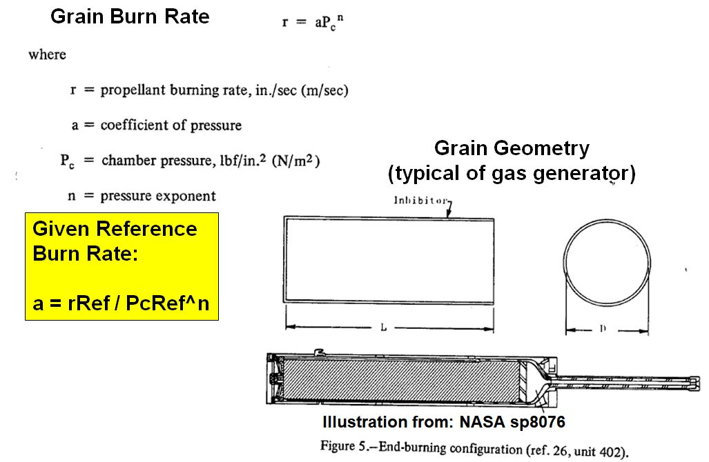{kind=link}
The following script.
from prism import Grain_EndBurn
grain = Grain_EndBurn(name="grain(end burner)",
WpropBurned=200.0, propName='ARC448',
cxw=1.0, Pc=500.0, FvacMaxPerGG=300.0, IspVacDel=238.6)
print grain.getSummary()
Gives Output:
Solid Grain (End Burning): grain(end burner)
mass = 200.000 lbm
type = propellant
Propellant : ARC448
==== INPUT ====
WpropBurned = 200.000 lbm
cxw = 1
FvacMaxPerGG = 300 lbf
Pc = 500.0 psia
IspVacDel = 238.6 sec
refBurnRate = 0.1200 in/sec
refPress = 500.0 psia
BRexp = 0.6
rho = 0.0555 lbm/cuin
==== OUTPUT ====
wdotMaxPerGG = 1.25733 lbm/sec
tminBurn = 159.1 sec
BurnRate at Pc = 0.1200 in/sec
Aburn = 188.789 sqin
Dgrain = 15.504 in
Web = 19.088 in
Vgrain = 3603.604 cuin